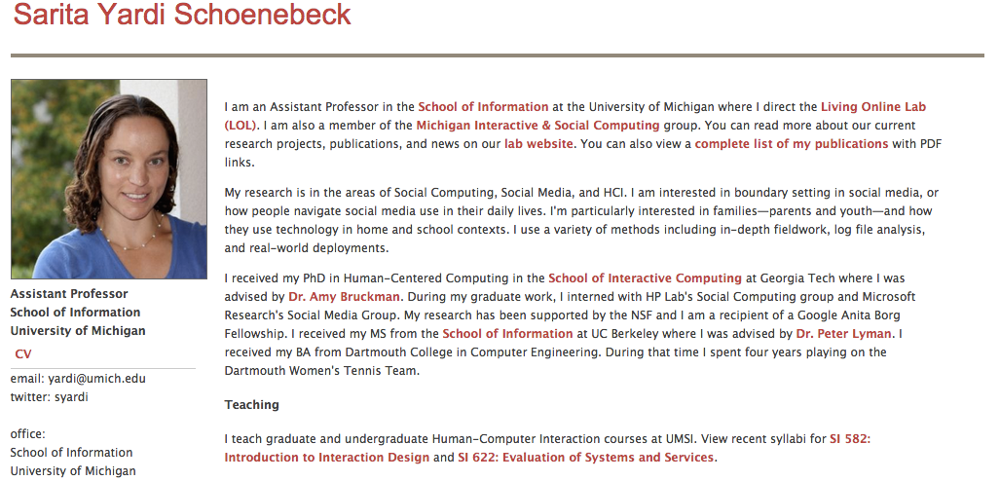

Portofolio of Yichi
ScaryMommy Confession Board Info Viz

ScaryMommy Confession Board
Background
Skills: Interview & Research
This information visualization is for Sarita Yardi Schoenebeck, an Assistant Professor in UMSI. She is researching on what parents are confessing in an anonymous online websites; how other parents react toward various types of topics and how the social interactions in an anonymous environment influence behavior.
Sarita Yardi Schoenebeck is trying to see the patterns between confession topics and commenting types. It is hard to see any potential relationship or trend from 230,000 raw posts by a person’s eyes. So an expressive and effective visualization will help her easily find the most and least topics that Moms tend to Like, Hug or Me too, compare keywords under different topics and refer to raw posts.

AP Sarita Yardi Schoenebeck
Research Questions
Skills: Interpretation
● What kinds of topics do parents confess anonymously online?
● What kinds of topics will draw more likes and hugs, or me toos?
● What are the most frequently appeared keywords in each topic?
● Is there a generalized pattern for Moms’ reactions toward others’ anonymous posts?
● Did any topic appear or disappear in the 6 years? How about their popularity changes?
Mallet Topic Modeling
Data Manipulation
Skills: Python, Mallet Topic Modeling, Excel
The dataset consists 230,000 posts with the post ID, the number of “Likes”, “Hugs”, and “OMG Me Toos” associated with each post. After data manipulation, user can
● Identify the top ten most popular topics within the confession board
● Examine the most frequently discussed keywords overall or within particular topics
● Compare the polarity and sentiment of all posts or posts belong to a certain topic under different numbers of “Likes”, “Hugs” or “Me toos”
● Examine the most popular raw posts under each topic
● Compare the trend and popularity of each topic across 6 years
Viz Example
Visualization Sections
Skills: D3, JavaScript, HTML, CSS
● Topic bubbles, user can know immediately what are the ten topics and their frequency
● Bar chart to display the top 50 keywords frequency within all posts and the specific topic
● Scatterplot to compare the polarity and sentiment of each post under different topics and controlled by the selected number of likes, hugs or metoos
● Raw post board to read the original content of the most popular posts under each topic and overall
● Stacked bars on timeline to visualize the trend of each topic within 6 years

Demo
Viz Intro
Topic Bubble
The landing page exhibits the top ten topic circles. They will then change to the order in descending way based upon its frequency. The content of the topic is shown underneath the circle. When mousing over the circle, a label with frequency number of posts under the topic will pop up. These colorful bubbles are adorable.
The top navigation bar is always displayed there when navigating through the website. Users can change the topic choice whenever they want. The right navigation dots are always there too, it indicates where you are of the entire web page. Users can hover them to see the page indicator and click to the corresponding page.
Bar Chart
After clicking the topic bubbles on the landing page, it directs users to the second page. Colorful bars show the top 50 popular keywords in the posts under this topic, while the back grey bars show their usage in all topics.
The default view of the keyword frequency bar chart displays all keyword frequency within the whole post board.
Scatterplot
The scatterplot displays five views on the top and a detailed view in the middle. Five views represents the view fulfills either likes, hugs, metoos condition, the view fulfills all three conditions, the view only fulfills likes condition, hugs condition and metoos views.
The middle window shows a detailed scatterplot with all posts locating with polarity and sentiment scores. Mousing over circles will show the post content.
Sliding the bar under the far left view will control all likes, hug, metoos’ and the far right slider bar.
Changing individual bars will change the slider bar under the integrated views.
The number of sample data can be changed to entering different input values into the input field.
Click the top thumbnail scatterplot window can show up a more detailed version.

Post Board
Post board displays the top ten popular posts with number of likes, hugs, and metoos. The popularity is calculated by adding numbers of likes, hugs and metoos together.
Timeline
The topics trends stacked bar based on timeline display posts frequency under each topic though the time. The height of each bar indicates the percentage of posts under each topic in the overall posts at that time stamp. After clicking one topic, when mousing enter the stacked bar chart, the choose topic goes down to the bottom, so users can see the change and compare the height much easier.